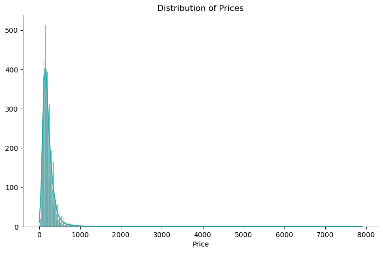
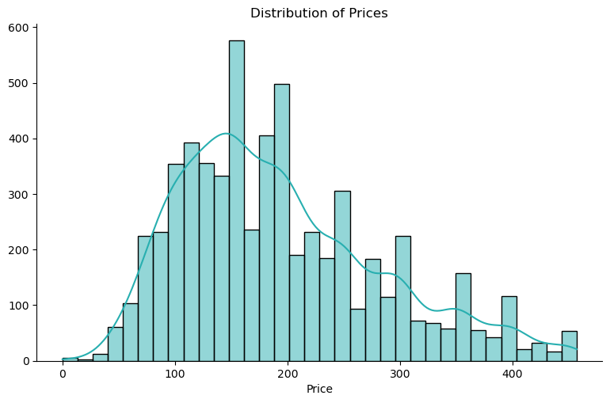

import numpy as np
import pandas as pd
import matplotlib.pyplot as plt
import seaborn as sns
import warnings
warnings.simplefilter(action='ignore')
my_colors =['#28AFB0', '#F46036', '#F1E3D3', '#2D1E2F', '#26547C', '#28AFB0']
file = "D:/Career/Data Science/Portfolios/Inside AirBnB - Netherlands/Amsterdam/"
listings = pd.read_csv(file + "listings.csv")
listings_detailed = pd.read_csv(file + "listings_detailed.csv")
calendar = pd.read_csv(file + 'calendar.csv')
reviews = pd.read_csv(file + 'reviews.csv')
reviews_detailed = pd.read_csv(file + 'reviews_detailed.csv')
neighbourhoods = pd.read_csv(file + 'neighbourhoods.csv')Pre-Processing Data
1. Missing Values
We will start our project by dealing with potential missing values.
Listings dataset
Let’s inspect the listings dataset first:
listings.shape(6998, 18)We have that the original dataset contains 6,998 observations and 18 variables. Let’s check know the potential missing values:
Code
listings.isna().sum() / len(listings) * 100id 0.000000
name 0.000000
host_id 0.000000
host_name 0.000000
neighbourhood_group 100.000000
neighbourhood 0.000000
latitude 0.000000
longitude 0.000000
room_type 0.000000
price 0.000000
minimum_nights 0.000000
number_of_reviews 0.000000
last_review 9.745642
reviews_per_month 9.745642
calculated_host_listings_count 0.000000
availability_365 0.000000
number_of_reviews_ltm 0.000000
license 0.342955
dtype: float64Since neighbourhood_group has only NA’s and license does not seem to be a relevant variable, we will drop them:
drop_var = ['neighbourhood_group', 'license']
listings = listings.drop(columns = drop_var)
listings.shape(6998, 16)What about last_review and reviews_per_month? No more than 9.7% of them are missing values. Seems reasonable to just drop those, instead of applying imputation methods:
na_vars = ['last_review', 'reviews_per_month']
listings.dropna(subset=na_vars, axis=0, inplace=True)
print('Observations:', len(listings) )Observations: 6316This lead us to 6,316 observations.
calendar dataset
We repeat the process with the calendar dataset:
Code
print( calendar.shape )
print ( calendar.isna().sum() / len(calendar) * 100 )(2554278, 7)
listing_id 0.000000
date 0.000000
available 0.000000
price 0.029715
adjusted_price 0.029715
minimum_nights 0.000078
maximum_nights 0.000078
dtype: float64Since the proportion of missing values is low, let’s just drop those observations:
calendar.dropna(axis=0, inplace=True)
print('Observations:', len(calendar) )Observations: 2553517reviews dataset
Same process with the reviews dataset:
Code
print( reviews_detailed.shape )
print( reviews_detailed.isna().sum() / len(reviews_detailed) * 100 )(339805, 6)
listing_id 0.000000
id 0.000000
date 0.000000
reviewer_id 0.000000
reviewer_name 0.000000
comments 0.004414
dtype: float64Code
reviews_detailed.dropna(axis=0, inplace=True)
print('Observations:', len(reviews_detailed) )Observations: 3397902. Outliers
Now we can check and remove potential outliers in our dataset. Let’s start by checking our price variable, which will be our main outcome of interest.
listings - Price
Plotting an histogram on price already tell of something about having the existence of outliers:
Code
import seaborn as sns
my_colors =['#28AFB0', '#F46036', '#F1E3D3', '#2D1E2F', '#26547C']
# Set up Figure
#fig, ax = plt.subplots(figsize=(8,4))
# Hist + KDE
sns.displot(data=listings, x="price", kde=True, color=my_colors[0], aspect=8/5)
# Labels
plt.xlabel('Price')
plt.ylabel('')
plt.title('Distribution of Prices')
# Show the Plot
plt.show()

Figure 1 reveals a pronounced tail towards the higher end, indicating the presence of outliers—entries with significantly higher prices compared to the majority of listings. These outliers can skew statistical analysis and machine learning models, potentially leading to inaccurate predictions. Employing the Interquartile Range (IQR) approach is a robust method for detecting and managing outliers.
By calculating the IQR, which represents the range between the 25th and 75th percentiles of the data distribution, we can identify values that fall beyond a certain multiple of the IQR from the quartiles. Let’s identify the outliers by calculating the IQR:
# calculate IQR for column Height
Q1 = listings['price'].quantile(0.25)
Q3 = listings['price'].quantile(0.75)
IQR = Q3 - Q1
# identify outliers
thres = 1.5
outliers = listings[(listings['price'] < Q1 - thres * IQR) | (listings['price'] > Q3 + thres * IQR)]
# drop rows containing outliers
listings = listings.drop(outliers.index)With this we can plot again our histogram without the outliers:
Code
import seaborn as sns
my_colors =['#28AFB0', '#F46036', '#F1E3D3', '#2D1E2F', '#26547C']
# Set up Figure
#fig, ax = plt.subplots(figsize=(8,4))
# Hist + KDE
sns.displot(data=listings, x="price", kde=True, color=my_colors[0], aspect=8/5)
# Labels
plt.xlabel('Price')
plt.ylabel('')
plt.title('Distribution of Prices')
# Show the Plot
plt.show()
print(listings.shape)

(6018, 16)The histogram in Figure 2 now exhibits a more symmetrical and bell-shaped distribution. This indicates a more normalized spread of prices, suggesting that extreme outliers have been successfully mitigated.
Notably, with outliers removed, the average price per night for Airbnb listings in Amsterdam is approximately 190 euros.
Data Export
We’ll export this finalized dataset. Going forward, all our analyses will rely on this processed dataset, which has undergone outlier removal using the IQR method.
listings.to_csv('listings_processed.csv', index=False)
calendar.to_csv('calendar_processed.csv', index=False)
# reviews_detailed.to_csv('reviews_processed.csv', index=False)